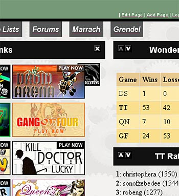
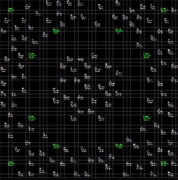
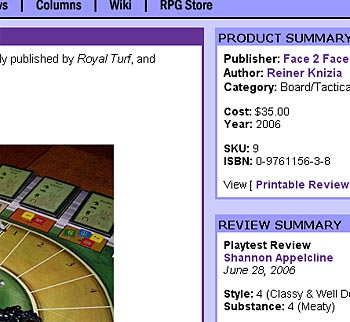

|
Managing User Creativity, Part Oneby Shannon Appelcline If you missed my column over the last couple of weeks, it was because I was putting together an interview with David Bowman of Tulga Games. You can now check it out in our Guest Voices column. I was surprised and impressed by how similar some of David's ideas about user creativity were to our own. And user creativity has been a topic much in my mind lately. I talked with David about it and I also made it the centerpiece of my last column, Trials, Triumphs & Trivialities #191, Encouraging User Creativity. Today I want to take the next step. You've figured out how you want your users to be creative in your game, and you've discovered that they're indeed interested in being creative. How do you take something as freeform as creativity and allow for it and harness it? I have four examples lined up, all based on real software that I've put together over the last five years, two for Skotos and two for RPGnet. I'm going to cover the first three software packages this week, because they're simple or (in the last case) they didn't manage creativity that well. Then in the next column I'm going to cover a current roll-out at RPGnet which I think is managing user creativity quite well, due to lessons learned. System #1: my.skotos.netmy.skotos was our first attempt at managing user creativity, and also the most constrained. The main idea was to allow users to create their own web pages full of Skotos information. We did this by collecting information in "panels", and then building an infrastructure which would allow users to select panels and move them around. The end result: in a community of almost 20 games, users could put together pages full of information about the games that interest them most. The end result looked, not surprisingly, a lot like my.yahoo. Users could create tabbed pages full of panels, and move those panels around with arrows, or via a more intricate (javascript) interface. They could also name their pages, set backgrounds, and set navigation bars. Overall, I like how my.skotos.net turned out. It's a cute little program that I think gives an interesting view of Skotos information to those premium users who can access it. However, looking at it from the creativity viewpoint, it's also got limitations: 
If I were recreating my.skotos.net now, I'd probably think about some of these issues: is there a way users could share their page setups? Is there a way they could put together new modules of their own? However, some of the limitations are ultimately limitations of this type of program, which expresses user creativity only in ordering existing content. System #2: Hegemony MapsMy next attempt at user creativity went more toward the ideals of letting users create things for other users. This came via a special map-making program for our Hegemony strategy game. Previously you created 150-star maps for Hegemony by entering the coordinates of the 150 stars by hand. In addition, a few standard, randomized maps were hard-coded into the game. I built a new system were you could instead define geometric shapes, and those shapes would be filled with stars. A simple map creation language was created, and then we made an interface for testing out the language available to our users.  The code above created the map shown at right. It was pretty simple: the user put in the home stars, then added and substracted geometric shapes which defined where stars could be formed. The result allowed for very different star systems which would allow for very different strategies without a lot of work. We never really rolled this out past a beta release because of limited interest in Hegemony, but it definitely got used. Players created all sorts of wacky maps and mailed them to use, and we used them in games. Here's some of the limitations the systems nonetheless had:
System #3: RPGnet ReviewsWe run both Skotos and RPGnet, two very different types of gaming sites. Because of its origins, RPGnet is a very different place, and it's long allowed much broader user creation of content. We do get lots of user content at Skotos. We've got three games (The Lazarus Project, Mortalis Victus, and Ironclaw) which are all on the verge of release, and which were all entirely user created. However, there are implicit limitations. We select people who are willing to create technically correct content. Over at RPGnet, meanwhile, anyone has been able to write a review (and to a lesser extent a column) since sometime back in the 1990s. This has resulted in a lot of high-quality content, but also a lot of variety. Administrators OK reviews and columns before they post, so there's rarely a question of totally inappropriate things being posted, but you do get a lot more variety than you'd expect if you had people doing very technically careful work. This shows up the most in the reviews. I rewrote the RPGnet review system a few years ago, and in the process I turned the reviews into dynamic database-driven software package. There were by that time somewhere over 5000 reviews at RPGnet, and the old ones were getting lost, so I wanted to create new ways to interrelate reviews, to let users more easily stumble up old ones. So I started linking reviewers by publisher name, by author name, by gaming system, and more. The problem with this approach was data inconsistency. For a gaming system one person might type "AD&D", another "Advanced Dungeons & Dragons" and still another "Advanced Dungeons and Dragons". Product titles were equally troublesome because one user might enter "The Magic Box" as a title, while another might put "Buffy The Vampire Slayer: The Magic Box", because the cover for the product was sufficiently ambiguous that it wasn't clear whether the title should include the line name or not. Searches for authors dropped in usefullness because an author might be known as "Marc William Miller", "Marc W. Miller", and "Marc Miller" in different products, not even counting inconsistency that might arise as users entered that data in different ways. This not only impacted our ability to interlink reviews, but it also impacted our ability to link to other databases. Currently our reviews link to two different stores, as revenue generators, a physical store and a PDF store. For the physical store we have very tight constraints on our searches, and thus we sometimes miss products due to slight name changes, while for the virtual store we've tried to adopt a more fuzzy-logic sort of matching, and there we end up with totally unrelated stuff. I'm not 100% happy with either approach and would prefer something toward the middle. If I was going to summarize issues with a freeform creativity content-input system, they'd be pretty simple:
ConclusionDon't get me wrong, all of these creativity management types that I've mentioned so far do their job, and they at various levels allow users to be creative and (in the later cases) to share that creativity. However, a creativity management system isn't as simple as just turning on a program on a web page. If you're going for only technical users, that might work, but if you're shooting for broader scope, you need to do some more work. Next week I'm going to talk about our newest system, the RPGnet Gaming Index, a freeform creative input that, unlike the RPGnet Reviews, I wrote from scratch. It's got some good lessons learned and some good ideas about how to manage huge amounts of user input coming in. [ <— #191: Encouraging User Creativity | #193: Managing User Creativity, Part Two —> ] |